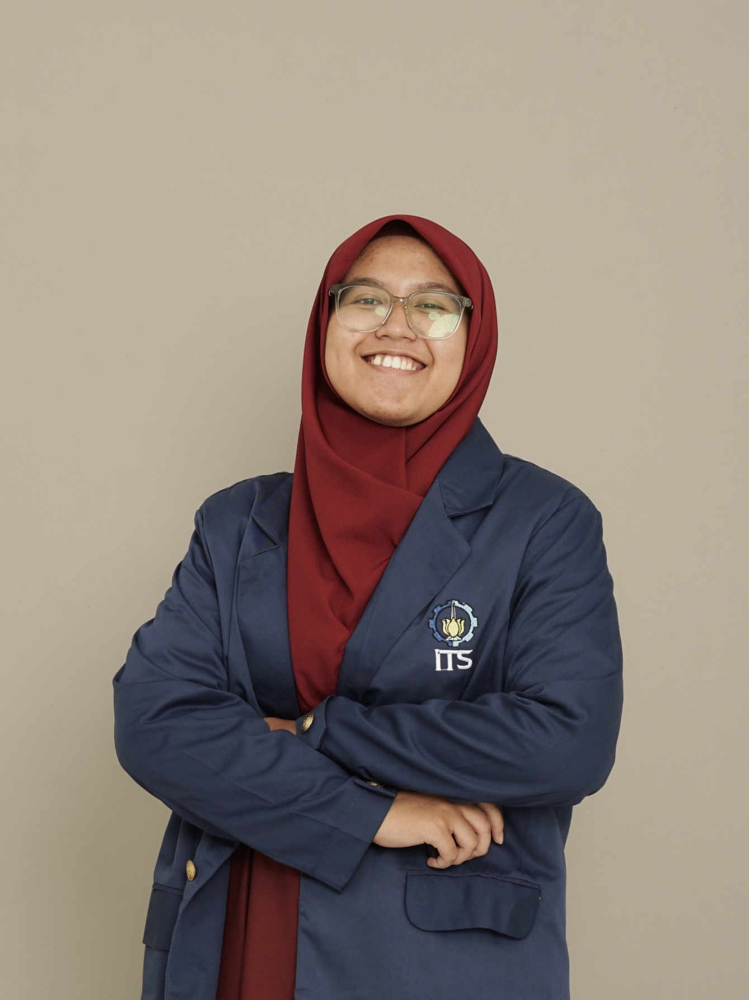

About
CONFIDENTIAL
Hi, I'm Azka!
I’m a Software Engineering student based in Surabaya, Indonesia, specializing in frontend development with React and Next.js. I enjoy turning design concepts into fast, responsive, and user-friendly web applications. Alongside my studies, I serve as a Database Systems Teaching Assistant. I'm currently looking for software engineering internship opportunities.
- Web Development
- Software Project Management
- Software Architecture and Design
- Software Quality Assurance
- Game Development